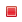
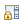
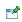
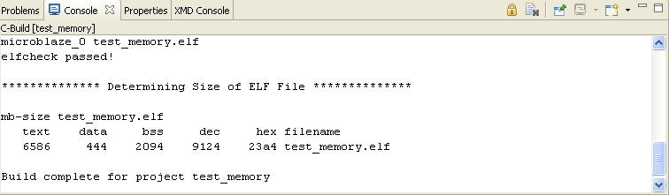

This view shows the output of the project compilation and any other operations performed in SDK like programming flash, etc

The console shows three different kinds of text, each in a different color:You can choose the different colors for these kinds of text on the preferences pages (Window > Preferences > Debug > Console).
When you right-click in the Console view (or when you press Shift+F10 when the focus is on the Console view), you see the following options:
| Icon | Command | Description |
|---|---|---|
 |
Terminate | Terminates the process that is currently associated with the console. |
| Remove all Terminated Launches | Removes all terminated launches that are associated with the console. | |
 |
Scroll Lock | Toggles the Scroll Lock. |
| Clear Console | Clears the console. | |
 |
Pin Console | Forces the Console view to remain on top of other views in the window area. |
| Display Selected Console | If multiple consoles are open, you can select the one to display from a list. | |
| MinimizeConsole | Minimizes the Console view. | |
| Maximize Console | Maximizes the Console view. |